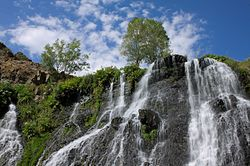

Think, for a moment, about the last time you were out in nature. Were you in a city park? At a campground? On the beach? In the mountains? Now consider: What was this place like in your parents’ time? Your grandparents’? In many cases, the parks, beaches and campgrounds of today are surrounded by more development, or are themselves more developed, than they were decades ago. But to you, they still feel like nature.

Nature, in the broadest sense, is the natural, physical, material world or universe. "Nature" can refer to the phenomena of the physical world, and also to life in general. The study of nature is a large, if not the only, part of science. Although humans are part of nature, human activity is often understood as a separate category from other natural phenomena
